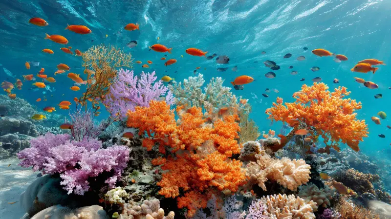
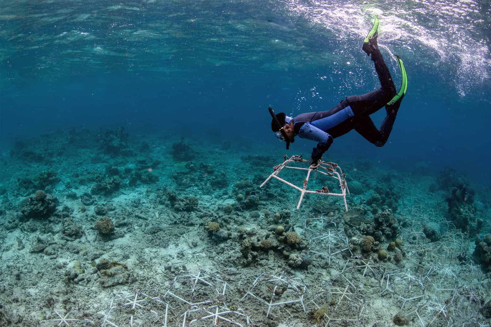

Marine Biodiversity & Coral Reefs
The ocean hosts the most extraordinary diversity of life on Earth. From microscopic phytoplankton that produce half the world's oxygen, to blue whales stretching over 30 metres in length, marine biodiversity underpins the health of every ecosystem on the planet. Yet it is disappearing at a rate that scientists describe as the sixth mass extinction.
At the heart of ocean biodiversity are coral reefs — often called the rainforests of the sea. Despite covering less than 1% of the ocean floor, they support around 25% of all marine species and provide livelihoods for over 500 million people globally through fishing, tourism, and coastal protection.

A thriving coral reef ecosystem — one of the most biologically diverse environments on Earth.
Coral Reefs: Rainforests of the Sea
Coral reefs are formed by tiny colonial animals called polyps, which secrete calcium carbonate skeletons over centuries to build vast reef structures. They exist in a symbiotic relationship with microscopic algae called zooxanthellae, which live within coral tissue and provide up to 90% of the coral's energy through photosynthesis.
When ocean temperatures rise even by 1–2°C above normal seasonal averages, corals expel their zooxanthellae in a stress response known as coral bleaching. Bleached coral is not immediately dead — but without its algae, it receives no nutrition and becomes vulnerable to disease. If temperatures do not return to normal within weeks, the coral starves and dies, leaving ghostly white skeletons.
Of the world's coral reefs have been lost since 1950 — with projections suggesting up to 90% could disappear by 2050 without urgent action.
Marine Biodiversity: More Than We Know
Scientists estimate there are between 700,000 and 1 million species in the ocean, but fewer than 250,000 have been formally described. Every deep-sea expedition reveals new life forms — bioluminescent creatures, chemosynthetic bacteria thriving around hydrothermal vents, and fish with extraordinary adaptations to extreme pressure and darkness.
Marine biodiversity is not just scientifically fascinating — it is economically and medically vital. Many of the most promising compounds for treating cancer, antibiotic-resistant infections, and neurological conditions have been derived from marine organisms. Healthy marine ecosystems also regulate nutrient cycles, absorb carbon, and maintain the balance of gases in the atmosphere that all life depends upon.
Key Threats to Marine Biodiversity
Climate Change and Ocean Warming
The ocean has absorbed over 90% of the excess heat generated by greenhouse gas emissions. This warming is shifting species ranges poleward, disrupting migration and breeding cycles, and bleaching coral reefs on a mass scale. The Great Barrier Reef has experienced five mass bleaching events since 1998, with the most recent and severe in 2022.
Destructive Fishing Practices
Bottom trawling — dragging heavy nets along the seafloor — can destroy centuries of reef structure in a single pass. Blast fishing, though illegal in many nations, remains widespread and obliterates entire reef communities instantly. Bycatch, the unintentional catch of non-target species such as dolphins, sea turtles, and seabirds, kills hundreds of thousands of animals annually.
Coastal Development and Pollution
Urban runoff carries fertilisers, sewage, and industrial chemicals into coastal waters, causing algal blooms that smother reefs and deplete oxygen. Dredging for coastal construction buries seagrass beds and disturbs sediment that blocks the light corals need to survive.

Mass coral bleaching caused by elevated ocean temperatures renders reef ecosystems lifeless.
Signs of Recovery and Hope
The news is not entirely grim. When protected and given space to recover, marine ecosystems demonstrate remarkable resilience. Marine Protected Areas (MPAs) have enabled fish populations, coral communities, and seagrass beds to bounce back significantly within just a few years of protection.
In the Maldives, communities have replanted thousands of coral fragments onto degraded reefs using steel frames — a process called coral gardening — with survival rates exceeding 70%. Researchers are also selectively breeding heat-tolerant coral strains in laboratories with the aim of restoring reefs that may otherwise succumb to warming waters.
- Marine Protected Areas cover around 8% of the global ocean — the target is 30% by 2030
- Coral restoration projects are active in over 60 countries worldwide
- Nations like Palau and Costa Rica have banned destructive fishing practices nationally
How You Can Help Protect Marine Biodiversity
- Never purchase coral, shells, or marine souvenirs made from wild-caught species
- Choose reef-safe sunscreen when swimming in the ocean (avoid oxybenzone and octinoxate)
- Support organisations funding coral restoration such as the Coral Restoration Foundation
- Reduce your carbon footprint to slow ocean warming
- Advocate for expanded marine protected areas in your country

Coral gardening programmes give degraded reefs a chance to recover with human assistance.